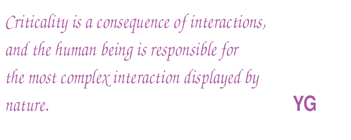
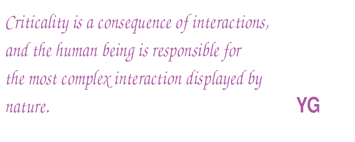

Yérali Gandica
ygandica@gmail.com
Assistant Professor
Laboratoire de Physique Théorique et Modélisation (LPTM).
Physics department & International Bachelor
CY Cergy Paris Université. Paris, 95000. France.
ORCID ID:
https://orcid.org/0000 - 0002 - 6262- 1801
twitter.com/ygandica
(Enseignant-Chercheur)
My main interest in research is the application of statistical and Critical Phenomena approaches to emergent social phenomena. The possibility of finding universal patterns, i.e, same qualitative behavior in different kind of phenomena. The similarity comes from the fact that collective emerging phenomena do not depend on the microscopic details of the process. The determinant properties are instead the symmetries, dimensionality, and conserved quantities. The theory implied on this methodology is the foundation for the field of Critical Phenomena, which has proved to be fruitful in allowing for the understanding of several patterns of universality.
The use of statistical methods has allowed for major advances in this area, by providing a bridge between the microscopic interactions and the large collective behavior of the system. My initial research activities were focused on agent based models. Making the analogy with social systems, is how I could see the emergent phenomena as a consequence of well-thought local rules among the interacting particles, which in the case of social phenomena are interacting human beings. After several works on this direction, I started with data science, as the only way for seeking what kind of patterns regarding human behavior is expressed by the data.
 

Short BIO
Yérali Gandica is currently an Assistant Professor at the Laboratoire de Physique Théorique et Modélisation (LPTM) of the Physics Department & International Bachelor in Modelling and Data Science, both at CY Cergy Paris Université. YG has awarded a degree in Physics from the Universidad Simón Bolívar (Caracas-Venezuela) and a PhD in Physics from the Venezuelan Institute for Research (IVIC). Then, she spent 7 years among 4 Postdoctoral positions in Europe. First, at the Center for Computational Physics of the Universidade de Coimbra, Portugal. There, she started studies on Agent-based models and Big Data. Secondly, she got a Postdoctoral fellow at the Namur Center for Complex Systems (naXys) at the Mathematics Department of the University of Namur, where she worked on Agent-based models (ABM) and started on Network Science. After, she joined the Center for Research in Finance and Management (CeReFiM), at the Business Department of the Faculty of Economics, Social Sciences and Business Administration in the Université de Namur. During that Postdoctoral fellowship, YG started applying the concepts of Network Science to financial data. Later on, she worked as an Associate Scientific Researcher at the Center for Operations Research and Econometrics (CORE) and at the Institute of Information and Communication Technologies, Electronics and Applied Mathematics (ICTEAM) of the Université catholique de Louvain, working on Geo-localised Data. YG has complemented her academic formation following the first three years of Sociology. Her main fields of expertises are Complex Systems, Computational Social Science, Big Data and Network Science, with a broad experience working in interdisciplinary groups (Mathematics, Finance, Geography, Engineering and Biology).